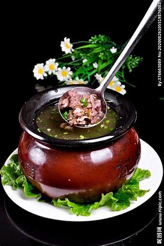
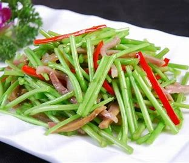
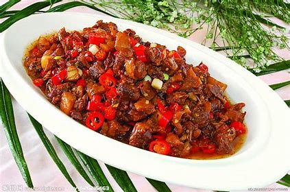

Dishes of the Province |
|||
|---|---|---|---|
| Name | Discription | Average Price | images |
| Crock pot soup | Crock pot soup has a history of more than a thousand years, and it is a very flavorful local snack. Today's crock soup is famous throughout the country in Nanchang, Jiangxi, and the crock simmering soup is a representative of Gan cuisine. | Average Price:8-15RMB |
 |
| Artemisia quinoa fried bacon | Artemisia quinoa fried bacon is a famous dish in Nanchang City, Jiangxi Province, China. It belongs to Gan cuisine and is one of the top ten Gan cuisines. Its main ingredient Artemisia quinoa is mainly produced along the coast of Poyang Lake. There is a special fragrance. | Average Price:20RMB |
 |
| Lotus blood duck | Lotus blood duck belongs to Gan cuisine. The lotus blood duck is listed as one of the "Top Ten Gan dishes" because of its characteristics of "delicious color, fragrant, tender and delicious" | Average Price:48-68RMB |
 |